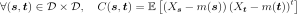
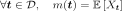
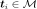
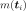
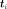
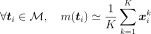
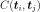
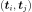
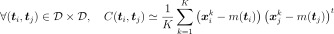
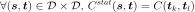

Estimation of a non stationary cov. model¶
Let  be a multivariate
normal process of dimension
be a multivariate
normal process of dimension  where
where  .
.
 is supposed to be a second order process and we note
is supposed to be a second order process and we note
 its covariance function.
We denote
its covariance function.
We denote  the vertices of
the common mesh
the vertices of
the common mesh  and
and
 the associated values
of the field
the associated values
of the field  . We suppose that we have
. We suppose that we have  fields.
We recall that the covariance function
fields.
We recall that the covariance function  writes:
writes:
(1)¶

where the mean function  is defined by:
is defined by:
(2)¶

First, we estimate the covariance function on the
vertices of the mesh . At each vertex

, we use the empirical mean estimator applied to the fields to estimate:

at the vertex
:
(3)¶


at the vertices
:
(4)¶

Then, we build a covariance function defined on
 which is a piecewise constant function defined
on by:
which is a piecewise constant function defined
on by:

where is such that  is the vertex of
the nearest to
is the vertex of
the nearest to  and
and  the
nearest to
the
nearest to  .
.
Examples: